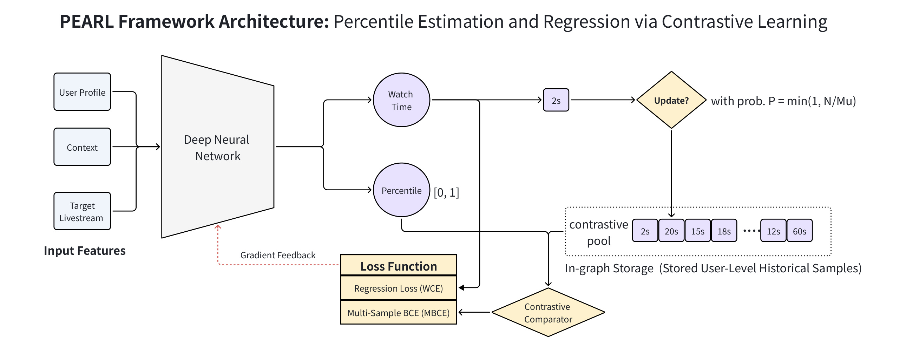
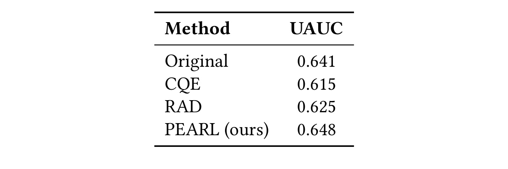
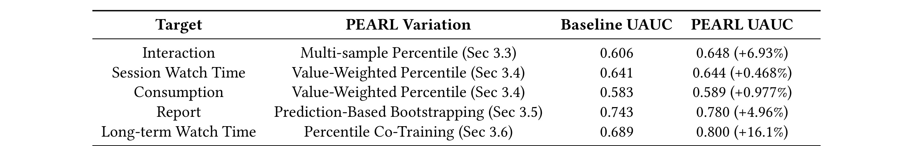
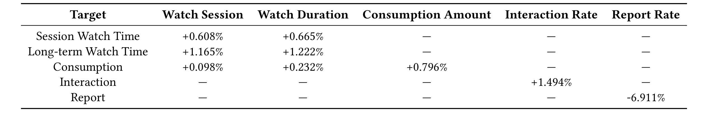
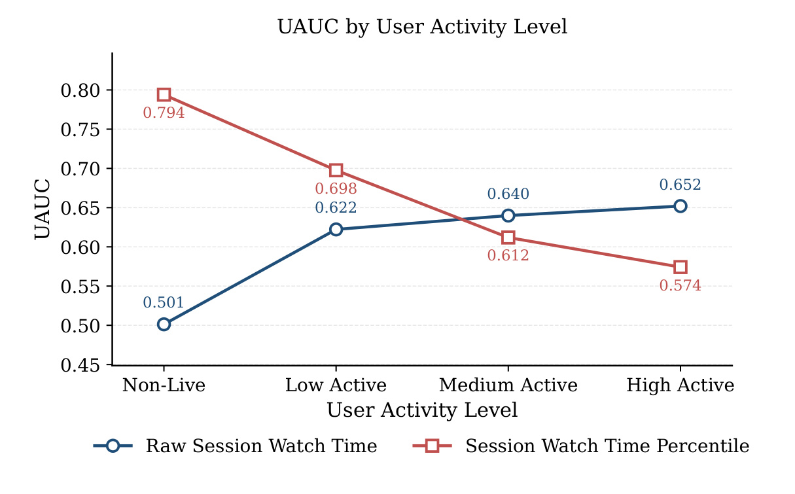

TikTok / ByteDance 的 Blake Gella、Wei Wu、Yuhao Yin、Zexi Huang 等人在 PEARL: Unbiased Percentile Estimation via Contrastive Learning for Industrial-Scale Livestream Recommendation 中处理的是直播推荐里非常具体的用户侧行为强度偏差：高活跃、高消费用户的反馈量级会支配训练信号，低活跃或刚进入直播场景的用户即便表现出真实兴趣，也容易被绝对 watch time、互动次数或消费金额淹没。PEARL 的做法不是再训练一个用户分布估计器，而是把目标改成用户内百分位，并用真实历史样本的对比关系直接近似这个百分位。论文未核验到公开代码或项目页；阅读重点应放在它怎样把“用户内相对偏好”写成一个可在十亿级线上系统中维护的 contrastive pool、损失函数和多目标训练方案。
1. 背景和问题
直播推荐的反馈偏差和短视频 watch-time 偏差相似，但又不完全相同。短视频场景里，视频时长常常是强混杂因素：用户看了 30 秒，到底是对 35 秒视频很喜欢，还是对 5 分钟视频兴趣一般，需要结合 item duration 才能解释。直播场景里，内容通常不是一个预先固定长度的 item，平均观看时长也远小于直播间持续时间，所以“时长上界”不是最主要矛盾。PEARL 关注的是用户侧 behavioral intensity imbalance：不同用户参与直播的频率、消费倾向、送礼习惯、互动习惯差异非常大，同样一个 30 秒观看行为，对每天看直播的用户可能只是普通浏览，对过去一个月几乎不看直播的用户却可能是很强的兴趣信号。若模型直接回归 watch time 或消费金额，训练梯度天然偏向高活跃用户，因为他们产生更多、数值更大的样本。
这个问题会伤害两个层面的推荐质量。第一是用户内排序。排序模型真正需要回答的是“对这个用户，哪个候选直播间更值得排前面”，而不是“这个样本的绝对观看秒数在全站有多大”。如果一个低活跃用户的正向反馈在全局数值上很小，模型可能把它误当作弱兴趣，从而无法发现这个用户进入直播内容的早期偏好。第二是跨用户训练公平性。工业推荐系统的训练样本往往高度不均衡，少数高活跃用户贡献大量反馈，模型容易学到“谁更可能产生大数值行为”而不是“某个候选 item 相对该用户历史是否更好”。这种偏差一旦进入 shared backbone，就会影响冷启动、低活、内容格式迁移和长期留存。
已有 debiasing 路线通常有三类。第一类是 counterfactual learning、propensity reweighting 或因果表示学习，试图修正曝光、选择或 duration 等混杂因素。第二类是 watch-time 分布建模，例如 Conditional Quantile Estimation、D2Q、CQE 等方法，它们希望把长尾连续目标拆成分位数或条件分布。第三类是 Relative Advantage Debiasing，先估计用户或用户-item 条件下的历史反馈分布，再把当前 watch time 转成相对优势。PEARL 和 RAD 的动机很接近：绝对反馈不能直接代表偏好，应该把样本放回用户自己的历史分布中解释。区别在于 RAD 仍依赖辅助分布估计模型，而 PEARL 试图用真实历史样本的 pairwise comparison 直接逼近百分位，避免在线维护完整 CDF 或额外训练分布模型。
论文把核心挑战拆成两个很工程化的问题。第一个是实时分布跟踪成本。如果要获得 $F_u(y)$，即用户 $u$ 在历史反馈分布中当前样本 $y$ 的百分位，理论上需要为每个用户维护历史分布并实时排序或近似查询。在十亿级用户、毫秒级 serving 和流式训练环境中，这既有存储压力，也有延迟压力。第二个是百分位直接回归难度。即使能拿到真实百分位 $p \in [0,1]$，用 MSE 或 Weighted Cross Entropy 直接拟合也不自然；百分位在高分位区域的微小误差可能导致排序上的明显差异，而普通回归损失不一定能稳定刻画这种有界、非线性、用户内相对的目标。
PEARL 的切入点因此很简洁：不显式估计完整分布，只从用户历史中采样一个或多个历史反馈 $Y_i'$，比较当前反馈 $y$ 是否大于这些历史反馈。这个二值比较 $\mathbb{I}(y>Y_i')$ 的期望正好等于当前反馈在用户历史分布中的 CDF。也就是说，PEARL 把“估计百分位”转换成“学习当前样本相对用户历史样本更大概率是多少”。这个转换很重要，因为它把一个分布跟踪问题变成了对比学习问题；系统只需要维护一个用户级历史样本池，不需要维护精确直方图、分位数索引或在线 CDF 估计器。
从推荐工程角度看，这篇论文更像一个目标构造和训练系统论文，而不是新 backbone 论文。它默认底层仍是现代工业 ranking 架构，任务头仍可以服务绝对 watch time、消费金额、互动和举报等目标；PEARL 提供的是一种相对偏好监督，可以作为主目标，也可以作为辅助 ranking regularizer。它的价值在于把用户内偏好归一化，减少高活用户对训练的支配，同时保留和生产系统结合的路径：连续目标可以用多样本百分位或价值加权百分位，二值稀疏目标可以用 prediction-based bootstrapping，必须保持金额或时长标定的目标可以用 co-training。
2. 方法
2.1 任务重写和公式盘点：从绝对反馈到用户内百分位
PEARL 的第一步是把推荐目标从全局绝对量级改成用户内相对位置。设用户 $u$ 与 item $i$ 发生一次交互，输入特征为用户画像、item 元信息和上下文信号拼接得到的 $\mathbf{x}=[\mathbf{x}_u,\mathbf{x}_i,\mathbf{x}_c]$，真实反馈量级为 $y$，例如一次直播观看时长、消费金额或互动强度。传统回归模型学习的是 $\hat{y}$ 或某个经过变换的绝对目标；PEARL 要学习的是当前 $y$ 在用户 $u$ 历史反馈分布中的百分位：
符号解释：$Y_u$ 是用户 $u$ 的历史反馈随机变量，$F_u(\cdot)$ 是该用户的历史 CDF，$p$ 是当前样本相对该用户历史的百分位。这个定义把不同用户的量级差异压到统一的 $[0,1]$ 空间里。对高活跃用户，30 秒可能对应中位数；对低活跃用户，30 秒可能接近高分位。模型若拟合 $p$，学习到的是“这次交互相对用户自己是否强”，而不是“这次交互在全站绝对值是否大”。
形式化地，PEARL 学习一个映射 $f:\mathcal{X}\rightarrow [0,1]$：
优化目标可以写成：
符号解释：$\theta$ 是模型参数，$\ell(\cdot)$ 是 ranking-compatible loss，$\mathcal{D}$ 是工业日志样本分布。这个公式展示了最理想的训练目标，但也暴露了 PEARL 要绕开的核心成本：训练时不能真的为每条样本精确计算 $F_u(y)$。如果显式做，需要为每个用户保存足够完整的历史分布，训练和 serving 时都要查询百分位；在平台级直播推荐里，这会变成状态存储和实时排序瓶颈。

Figure 1 展示了 PEARL 的系统闭环。左侧输入包括用户画像、上下文和目标直播间，进入 Deep Neural Network 后分成两个输出：一个是 watch time 等绝对回归头，另一个是 percentile 头。右侧是用户级 contrastive pool，保存历史样本，例如 2 秒、20 秒、15 秒、18 秒、12 秒、60 秒等。当前样本一方面作为真实量级进入回归损失，另一方面通过 contrastive comparator 与历史池比较，形成 Multi-Sample BCE 的软标签；训练梯度再回到网络。图中上方的 Update 路径说明历史池不是静态缓存，而是在流式样本到来时按 reservoir sampling 更新。这个图的关键不是 DNN 结构本身，而是把用户状态、百分位预测、历史采样、损失函数和回归头放在同一个训练图中：PEARL 既能服务绝对量级，又能用用户内比较纠正 shared representation。
这部分的公式盘点可以概括为三层。第一层是百分位定义 $p=F_u(y)$，给出无偏目标；第二层是模型预测 $\hat{p}=f(\mathbf{x};\theta)$，把 ranking head 的输出限制在 $[0,1]$；第三层是风险最小化 $\theta^*$，说明 PEARL 本质上仍是监督学习，只是监督标签不再直接来自绝对 watch time，而来自当前样本相对用户历史的排序关系。后续所有单样本、多样本、价值加权、bootstrapping 和 co-training 都是在解决一个问题：如何在不显式计算 $F_u(y)$ 的前提下，给 $\hat{p}$ 一个稳定、可扩展、低偏的训练信号。
2.2 单样本对比：无偏百分位估计的最小构造
单样本版本是 PEARL 的理论核心。对当前训练样本，给定用户 $u$ 的反馈量级 $y$，从同一用户历史分布 $f_u(\cdot)$ 中采样一个历史参考值 $Y'$。然后构造二值标签：
这个标签表达的是“当前反馈是否大于一个随机历史反馈”。如果当前 $y$ 很强，它大概率会大于历史样本，标签期望接近 1；如果当前 $y$ 很弱，它大概率小于历史样本，标签期望接近 0。关键定理是：这个二值指标的期望就是用户内百分位。
符号解释：$f_u(t)$ 是用户 $u$ 历史反馈的概率密度函数，$Y'$ 是从这个分布采样的历史反馈，$y$ 是当前样本的固定反馈。因为指示变量的期望等于事件概率，$\mathbb{E}[\mathbb{I}(y>Y')]=P(Y'
在训练上，单样本 PEARL 用 Binary Cross Entropy 拟合这个对比标签：
符号解释：$\hat{p}=f(\mathbf{x};\theta)$ 是模型输出的当前样本百分位预测。BCE 的最优解会逼近标签的条件期望；由于标签期望等于真实百分位，模型最终学到的是 $F_u(y)$ 的无偏近似。这个推导的直觉很强：如果模型给某个样本预测 $\hat{p}=0.8$，它的含义不再是“绝对 watch time 很高”，而是“当前样本大约强过该用户历史中 80% 的同类样本”。这正好对应用户内排序所需的相对偏好。
单样本构造的优点是轻，缺点是方差大。对于同一个当前反馈 $y$，如果随机抽到一个很弱的历史样本，标签为 1；如果抽到一个很强的历史样本，标签可能为 0。单次梯度会非常噪声，尤其在直播推荐这种反馈长尾、用户活跃度差异大、训练流量巨大的场景中，噪声标签会影响收敛稳定性。因此单样本版本主要是理论基石：它证明了“真实历史对比”可以作为无偏百分位估计；生产系统还需要多样本版本来降低方差。
2.3 多样本对比：把无偏估计变成稳定训练信号
多样本 PEARL 从用户历史池中采样 $N$ 个独立参考值 $\{Y_1',Y_2',\ldots,Y_N'\}$，对每个参考值生成 $B_i=\mathbb{I}(y>Y_i')$，再取平均：
如果单个 $B$ 是成功概率为 $p=\mathrm{CDF}_u(y)$ 的 Bernoulli 随机变量，则方差为 $p(1-p)$。多样本平均后的方差为：
符号解释：$N$ 是用户历史参考样本数，论文生产配置使用 $N=50$，因此在理想独立采样条件下可获得 50 倍方差降低。这个设计非常贴近工业训练：百分位本身是用户内分布统计量，单个随机样本太脆弱；固定大小的用户级 reservoir pool 则在存储成本可控的前提下提供稳定软标签。相比维护完整分布，$N=50$ 的池子小得多；相比单样本，它能显著平滑梯度。
多样本 BCE 写作：
由于 BCE 对标签是线性的，上式等价于用软标签 $\bar{p}$ 做一次 BCE：
符号解释：$\bar{p}$ 是当前 contrastive pool 下的经验百分位。若当前样本强过 50 个历史样本中的 40 个，则 $\bar{p}=0.8$；模型的最优输出也会趋近 0.8。这个软标签比单个 0/1 标签更稳定，也比直接回归绝对 watch time 更能表达用户内排序。它还能自然处理历史分布的异质性：高活用户的历史池中大值更多，当前样本要拿到高百分位就必须真的超过很多强历史反馈；低活用户历史池中反馈整体较弱，当前样本在用户内被判为高偏好也更容易被捕捉。
需要注意的是，多样本 PEARL 仍然只估计“相对位置”，不是校准后的绝对价值。对很多纯排序任务，这已经足够；但对直播平台，watch time、消费金额、送礼金额、长期留存、举报等目标的业务含义并不相同。有些目标需要价值大小，有些目标是稀疏二值，有些目标必须保留绝对标定。因此论文继续提出 value-weighted、bootstrapped 和 co-training 三种扩展，把核心的百分位估计嵌入更复杂的业务目标。
2.4 价值加权对比：让百分位不完全丢掉量级
普通百分位是 scale-agnostic 的：只关心当前样本在用户历史中排第几，不关心被超过的历史样本分别是多少秒、多少钱或多少次互动。这个性质有利于消除用户强度偏差，但也可能损失业务价值信息。比如一次 100 美元消费和一次 1 美元消费，在各自用户历史里都可能是 90 分位，但对平台价值和拍卖排序的含义不同。PEARL 的 Value-Weighted Contrastive Learning 试图在“用户内相对偏好”和“绝对贡献价值”之间折中。
具体做法是，把历史参考样本 $Y_i'$ 的量级作为对应对比项的权重：
这个损失等价于用价值加权软标签 $\bar{p}_{vw}$ 做 BCE：
符号解释：$\bar{p}_{vw}$ 不再是“超过多少个历史样本”的比例，而是“超过的历史样本贡献了多少历史总价值”的比例。若当前 $y$ 超过了很多小值但没有超过少数大值，普通百分位可能很高，价值加权百分位会更保守；若当前 $y$ 超过了历史中的高价值样本，它会获得更大的监督信号。论文进一步说明，全局最优预测对应 partial expectation ratio：
符号解释：分子是小于等于当前 $y$ 的历史反馈所贡献的累计期望价值，分母是用户历史反馈的总期望价值。这个目标把 CDF 从“样本数量累计”改成“价值累计”。它依然是用户内归一化的，所以能缓解高活用户支配训练；但它不会完全忽略绝对金额或时长的差异，更适合 session watch time、consumption 等既要排序又要价值解释的目标。
2.5 稀疏目标和联合训练：bootstrapping 与 percentile co-training
直播推荐中的很多反馈不是连续时长，而是稀疏二值事件，例如是否送礼、是否举报、是否互动。直接用 $\mathbb{I}(y>Y')$ 处理二值标签会退化：若 $y=0$，它几乎总是最低百分位；若 $y=1$，它几乎总是最高百分位。若某个低频事件在用户历史池里全是 0，contrastive label 也会缺少区分度，训练无法学习细粒度排序。PEARL 用 prediction-based bootstrapping 解决这个问题：不是比较原始二值 $y$，而是比较一个先验预测模型 $\Psi(\cdot)$ 给出的连续预测值。
设 $\Psi(\cdot)$ 对当前样本输出连续期望 $\hat{y}$，对历史样本输出 $\hat{Y}_i'$。bootstrapped 百分位为：
符号解释：$\hat{y}$ 与 $\hat{Y}_i'$ 都是预测空间中的连续值，而不是 0/1 原始标签。即使多个样本真实标签同为 0，先验模型也可能根据用户、item 和上下文给出不同风险或兴趣强度，从而提供细粒度对比信号。这个策略本质上把稀疏二值反馈先映射到一个连续潜在偏好空间，再在这个空间里做用户内百分位估计。论文中 report 目标就采用了 prediction-based bootstrapping，并在离线和线上都有明显收益。
另一个扩展是 percentile co-training。很多工业目标不能只服务 $\hat{p}$，因为排序分数、eCPM、消费金额、长期 watch time 等还需要绝对量级标定。如果完全替换成 scale-free 百分位，可能提高用户内排序，却破坏金额、时长和竞价结算的物理含义。因此 PEARL 提出双头联合训练：一个回归头保留绝对量级，一个百分位头作为 debiased ranking regularizer。
符号解释：$\mathcal{L}_{reg}$ 负责让 $\hat{y}$ 对真实量级 $y$ 保持标定，$\mathcal{L}_{PEARL}$ 使用用户历史池 $\mathcal{P}_u=\{Y_i'\}_{i=1}^{N}$ 训练百分位头，$\lambda$ 控制两种监督的权重。推理时可以主要服务 $\hat{y}$，但 shared backbone 已经在训练中吸收了用户内相对偏好的约束。这种设计对于长期 watch time 等目标尤其有用：绝对量级要保留，但训练表示不能完全被高活用户的大量级反馈拖偏。
2.6 十亿级实现：用户级 reservoir pool 和梯度门控
PEARL 的工程实现重点是状态管理。论文没有要求保存用户完整历史，而是在 Parameter Server 中为每个用户维护两个状态：大小为 $N=50$ 的 contrastive pool $\mathcal{P}_u$，以及用户已经处理过的流式交互计数 $M_u$。当新交互到来时，先更新计数：
若 $M_u\le N$，当前反馈 $y$ 直接顺序写入池中；若 $M_u>N$，当前样本以概率进入池：
如果被接受，它随机覆盖池中的一个槽位；否则丢弃。这个过程就是 reservoir sampling，保证在任意时刻，固定大小的池近似保存用户历史样本的均匀随机子集。图里也写了 $P=\min(1,N/M_u)$，对应前 $N$ 个样本必进池、之后按概率进入。这个实现有两个关键好处：一是存储上限固定，每个用户只需很小的历史状态；二是训练图中可直接拿到 contrastive pool，计算 MBCE 或 VWBCE 时不需要外部实时分布服务。
另一个实现细节是 gradient gating。低活或新用户的历史池过稀，经验百分位 $\bar{p}$ 会非常不可靠。如果一个用户只有一两个历史样本，当前样本和历史样本的对比既不能代表真实分布，也容易给 shared backbone 注入噪声。论文设置触发阈值 $\tau=10$：只有当 $M_u\ge\tau$ 时，该训练样本才参与 ranking head 的 PEARL 梯度；否则跳过百分位头更新。这不是为了忽略新用户，而是为了避免过早使用高方差信号。新用户仍可通过原始回归或其他任务头学习，等历史池积累到足够密度后，再启用 PEARL 对比监督。
这个系统设计体现了论文的实际取舍。PEARL 的数学目标是用户内百分位，但工业落地不能牺牲毫秒级延迟，也不能引入复杂的 per-user 分布查询。Reservoir pool 给出低成本历史近似，MBCE 给出平滑软标签，VWBCE 与 co-training 保留业务价值，gradient gating 则避免稀疏状态污染训练。它不是一个完全无状态的 loss trick，而是一个小状态、低延迟、可流式更新的目标构造框架。
3. 实验结果
3.1 数据、指标和 baseline
论文实验全部来自工业直播推荐系统，没有使用公开 benchmark。训练与评估数据来自 ranking stage 的生产流式数据，规模为 168B instances、4552 features、98 targets。这个规模说明 PEARL 不是在离线小数据上验证一个损失函数，而是在接近真实线上训练口径的多目标 ranking 系统中评估。它也意味着外部复现会受限：读者可以复现目标构造思想，但无法复现作者的完整 feature、traffic、PS 状态和线上 A/B 环境。
主要指标是 UAUC，即 User-Averaged AUC。对回归目标，论文使用 User-Averaged Regression AUC，也就是按用户计算预测值是否保留真实 watch-time item pair 顺序，再在用户维度平均。这个指标选择与论文问题定义一致：如果关心用户内偏好，就不能只看全局 AUC 或全局回归误差。一个模型可能在高活用户上表现很好，从而推高全局指标，却在低活用户或非直播用户上接近随机；UAUC 会更敏感地暴露这种用户侧不均衡。
Baseline 包括原始 regression/classification 目标、Conditional Quantile Estimation 和 Relative Advantage Debiasing，所有方法共享现代 ranking architecture backbone，并使用 task-specific MLP towers。训练优化器是 RMSPropV2，学习率 0.0015，momentum 0.999999。论文没有展开 backbone 细节，因为 PEARL 的比较重点不是 backbone 替换，而是在同一生产架构上更换或补充目标构造。

Table 2 是 session watch time 目标上的主离线对比。Original 的 UAUC 为 0.641，CQE 降到 0.615，RAD 为 0.625，PEARL 达到 0.648。这个表有两个信号。第一，PEARL 相对生产原始目标只提升 0.007 绝对 UAUC，但在成熟工业系统中，这种用户平均排序指标提升并不小，尤其考虑到目标已经经过长期线上优化。第二，CQE 和 RAD 在直播推荐下反而低于 Original，说明短视频 watch-time 或一般分位数建模方法不能直接搬到直播场景。CQE 的非个性化分布校正难以处理不同用户活跃度，RAD 依赖用户侧 CDF 和 watch-time bins，在直播场景的稀疏、格式差异和低活用户问题下不一定稳定。PEARL 的优势来自真实用户历史对比，不要求额外分布模型先准确估计每个用户的反馈 CDF。
3.2 多目标离线结果：不同反馈分布对应不同 PEARL 变体
论文没有把同一个 PEARL 形式硬套到所有目标，而是根据标签分布选择变体。Interaction 使用 multi-sample percentile，因为互动目标的主要问题是用户内排序和活跃度差异，继续加价值权重收益有限。Session Watch Time 和 Consumption 使用 value-weighted percentile，因为这两个目标既有用户强度偏差，又有绝对业务价值；完全 scale-free 的百分位可能损失金额或时长贡献。Report 使用 prediction-based bootstrapping，因为举报是稀疏二值目标，直接对比 0/1 会退化。Long-term Watch Time 使用 percentile co-training，因为长期观看时长需要保持绝对标定，同时又需要借助百分位监督修正用户偏差。

Table 3 展示了这种变体选择的效果。Interaction 从 0.606 到 0.648，相对提升 6.93%；Session Watch Time 从 0.641 到 0.644，提升 0.468%；Consumption 从 0.583 到 0.589，提升 0.977%；Report 从 0.743 到 0.780，提升 4.96%；Long-term Watch Time 从 0.689 到 0.800，提升 16.1%。这里最强的结果来自长期 engagement 和 report，原因也符合方法直觉：这类目标更稀疏、更依赖用户个性化历史，原始全局标签最容易被高活用户或高频群体支配。Session Watch Time 和 Consumption 的提升较小，一方面说明原始生产目标已经比较强，另一方面也说明价值类目标不能完全依赖用户内百分位，仍需要保留绝对量级。对工程应用来说，这张表比单一主结果更有价值，因为它告诉我们 PEARL 是一个目标家族：不同业务目标应选择不同的百分位构造，而不是把同一个 loss 当万能药。
需要谨慎的是，表中“相对提升”并不代表线上业务收益一定按同等比例转化。UAUC 是离线用户内排序指标，线上还会受到召回、重排、流量分发、探索、约束规则和多目标融合影响。尤其 Long-term Watch Time 的 16.1% UAUC 提升很醒目，但它是 co-training 变体下的目标表现，最终服务的可能仍是绝对回归头。更稳妥的解读是：PEARL 对稀疏、低活、用户差异大的目标提供了明显更强的表示学习信号，而线上价值需要看 A/B。
3.3 线上 A/B：收益来自多个目标，而不是单点离线刷分
论文报告了一系列为期一周的线上 A/B。PEARL 不是一次性替换整个推荐系统，而是在不同目标上补充或替换 baseline target prediction，并观察对应业务指标，包括 Watch Session/User、Watch Duration/User、Consumption Amount/User、Interaction Rate/User 和 Report Rate/User。这种设置更接近工业论文常见验证方式：每个目标对应不同线上指标，不能只看总 watch time，也不能只看一个离线 UAUC。

Table 4 的线上结果显示，Session Watch Time 目标带来 Watch Session +0.608%、Watch Duration +0.665%；Long-term Watch Time 目标带来 Watch Session +1.165%、Watch Duration +1.222%；Consumption 目标带来 Watch Session +0.098%、Watch Duration +0.232%、Consumption Amount +0.796%；Interaction 目标带来 Interaction Rate +1.494%；Report 目标带来 Report Rate -6.911%。摘要中进一步概括为 Watch Duration +2.10%、Consumption Amount +0.80%、Interaction Rate +1.49%、Report Rate -6.91%。对成熟直播推荐系统来说，0.6% 到 1.2% 的 watch 指标提升、近 0.8% 的消费金额提升和接近 7% 的举报率下降都很有业务意义。
这些线上结果支持 PEARL 的两个核心假设。第一，用户侧行为强度偏差确实在生产系统里影响目标学习；如果只是离线指标噪声，线上不会在多个目标上出现同向收益。第二，百分位监督不仅改善“看起来更公平”的用户内排序，也能影响真实业务指标。特别是 Report Rate 下降，说明 bootstrapped contrastive learning 对稀疏负反馈可能提供了比原始二值标签更可学习的风险排序。不过，论文没有给出 A/B 的置信区间、流量规模、指标统计显著性和长期稳定性，也没有展示多目标同时上线时的交互影响。因此这些数字应理解为作者生产环境下的实证证据，而不是可直接迁移到所有直播平台的保证。
3.4 分用户活跃度：PEARL 真正修的是低活和非直播用户
PEARL 最有说服力的图不是总指标，而是按用户活跃度分桶的 UAUC 曲线。论文把用户分成 Non-Live、Low Active、Medium Active 和 High Active，其中 Non-Live 指过去一个月没有看直播的用户，High Active 指每天消费直播内容的用户。这个划分直接对应本文问题定义：高活用户历史反馈多、量级大，原始 watch time 容易学；低活和非直播用户历史稀疏，绝对量级弱，原始目标容易接近随机。

Figure 2 的趋势非常清楚。Raw Session Watch Time 在 Non-Live 用户上 UAUC 只有 0.501，几乎是随机；Low Active 为 0.622，Medium Active 为 0.640，High Active 为 0.652，随着活跃度增加而变好。Session Watch Time Percentile 则相反：Non-Live 达到 0.794，Low Active 为 0.698，Medium Active 为 0.612，High Active 为 0.574。也就是说，原始绝对目标更擅长高活用户，而百分位目标显著补齐非直播和低活用户。这个交叉趋势解释了 PEARL 为什么适合作为 complement，而不一定完全替代原目标：高活用户上原始 watch time 仍然保留更强的绝对量级信息，低活用户上百分位监督更能发现进入直播内容的相对兴趣。
从产品角度看，这个结果很关键。直播推荐往往需要把非直播用户或低活用户转化进直播生态；如果原始模型在这些用户上接近随机，系统会把他们继续推回短视频或其他内容格式，形成反馈闭环。PEARL 提供的百分位目标能把“这个用户很少看直播，但这一次相对他自己已经很强”识别出来，从而给直播候选更多合理曝光。它不是消除所有用户差异，而是把用户自身历史作为解释上下文，避免全站绝对量级把低活用户的弱但真实信号压掉。
4. 总结
4.1 我的判断
PEARL 的核心价值在于把用户侧行为强度偏差转化为一个可训练、可证明、可上线的目标构造问题。它没有发明新 ranking backbone，也没有依赖复杂因果图；它抓住了一个非常工业的事实：推荐系统最终做的是用户内候选排序，但很多训练目标却是全局绝对量级。通过真实历史样本的对比，PEARL 用低成本 contrastive pool 近似用户内百分位，在理论上是无偏估计，在工程上又能通过 reservoir sampling 和 gradient gating 放进生产训练链路。这种“把 CDF 查询变成历史样本对比”的转换，是整篇论文最值得借鉴的地方。
4.2 工程启发与复现建议
如果要在自己的推荐系统中尝试 PEARL，我不会从完整多目标上线开始，而会先做三步诊断。第一，按用户活跃度、内容格式活跃度、消费强度和新老用户分桶，比较原始目标的用户内 AUC 或 regression AUC，看是否出现高活用户明显更好、低活用户接近随机的模式。第二，离线构造固定大小用户历史池，尝试用 $N=20$、$N=50$、$N=100$ 的 MBCE 训练一个辅助 percentile head，观察低活和非主内容格式用户是否改善。第三，再决定目标变体：连续但价值重要的目标用 VWBCE，二值稀疏目标用 bootstrapped percentile，必须保留标定的目标用 co-training。不要直接用百分位替换所有回归头，否则可能牺牲金额、时长或 eCPM 的绝对可解释性。
4.3 局限与风险
这篇论文的主要局限有四点。第一，实验完全基于内部数据，168B 样本、4552 特征和 98 个目标很强，但外部无法复现实验规模，也难以判断结果对中小平台是否成立。第二，PEARL 假设用户历史池能代表用户偏好分布，但兴趣会随时间漂移；纯 reservoir sampling 对长期历史均匀采样，可能低估近期兴趣变化，实际系统也许需要时间衰减或分场景池。第三，低活用户的百分位信号虽然有用，但历史过少时方差仍高，阈值 $\tau=10$ 只是一个经验保护，冷启动早期仍需要其他召回、探索或内容理解信号。第四，百分位目标改善用户内排序，不等于完全解决因果偏差；曝光选择、推荐反馈闭环、内容供给差异和平台策略仍可能影响用户历史池本身。
4.4 后续跟进
后续我会重点看三件事。第一，PEARL 与 RAD、D2Q、CQE、DADF 这类 watch-time 或分布校正方法的边界：什么时候应估计条件分布，什么时候用真实历史对比更稳。第二，contrastive pool 是否可以做时间衰减、场景分池或内容格式分池，例如直播、短视频、电商、搜索分别维护不同历史参考，以减少跨场景偏差。第三，PEARL 的思想是否能迁移到 LLM4Rec 或个性化 Agent：很多用户反馈也是强度不均衡的，比如点击、收藏、跳过、停留、追问和消费，直接回归绝对强度同样会被高活用户支配；用户内百分位或相对优势可能是更稳的偏好监督。